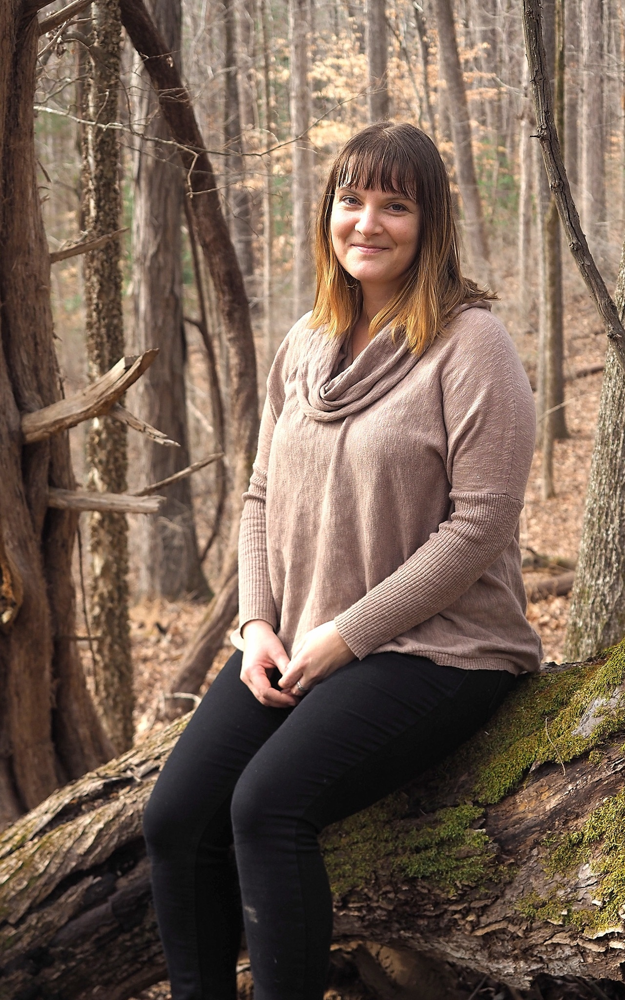
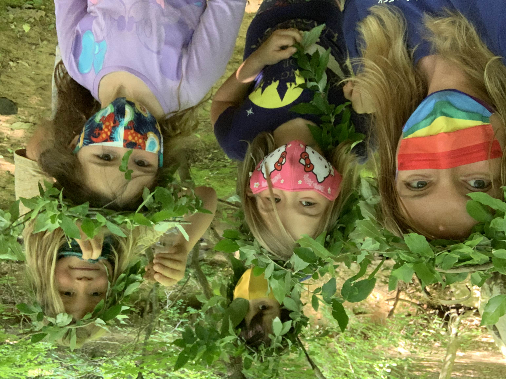
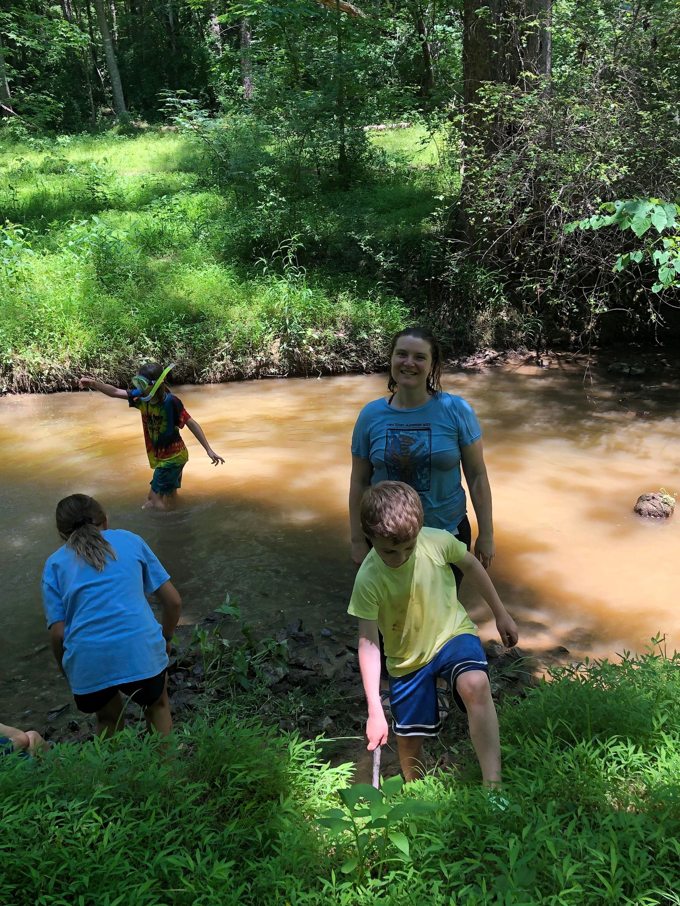

Katie Kenlan, Camp Club Director

I grew up in the woods of Chatham County, North Carolina (“Deep Chatham” as we call it). I’ve always felt at home outside and in the natural environment. It’s a passion of mine to share my love and excitement for the outdoors with children. I was an Environmental Studies major at Antioch College in Ohio before coming to UNC, where I recently graduated from the Latin American Studies Department. I completed a senior honors thesis titled, Why the Latin American Environmental Education Model Ecopedagogy is Uniquely Situated to Address Shortfalls within Environmental Education. This thesis was awarded the Federico Gill Award for best undergraduate honors thesis on a Latin American or Caribbean topic.

While studying at UNC, I was a co-teacher at a Reggio Emilia-based preschool in Carrboro, the Morningside School. Before that I have had a long history working in childcare. Besides my time at The Morningside School, some of the programs I have worked at that most influenced me were the Community Independent School in Chapel Hill and Clapping Hands Farm, a 100-acre, off-the-grid program in Pittsboro.

In all three of these workplaces I focused on child mediation skills and promoting positive, clear communication amongst children. It’s important to me to help young people develop cooperative group skills and to better understand their own feelings so they can express them to friends and those around them.
I have attended career development workshops in the mountains of North Carolina at the Eastern Region Association of Forest and Nature Schools in 2019 and at The Irvine Nature Center in Maryland.
Some random facts about me are, I was adopted as a baby, play the accordion, speak Spanish and built my studio with my own two hands using locally sourced materials. I’ve had several jobs focused on food security and the local food movement and dabbled in organic farming for several years.